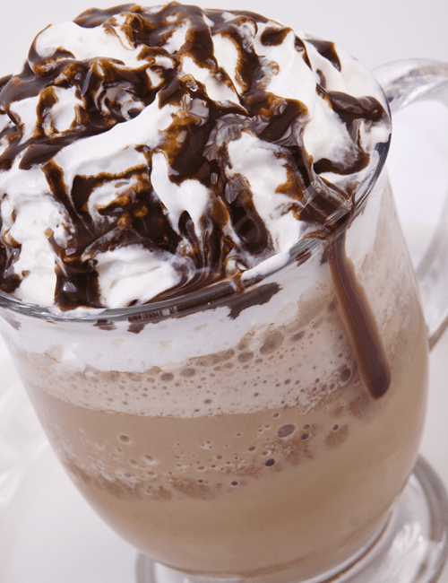
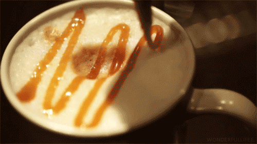
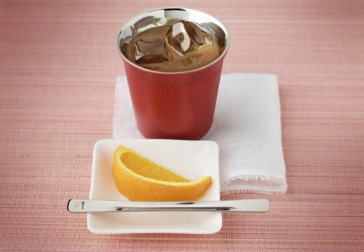
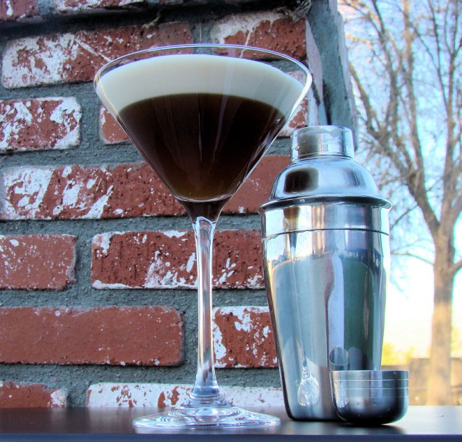

|  |
Cafe Mocca helado
Metés 375ml de café frío, 500 ml de leche semidescremada, 3 cucharadas de chocolate derretido, 2 cucharadas de azúcar y bastante hielo todo en la licuadora. Le das hasta que alcance el punto frappé, servís y si querés le agregas un poco de crema batida y salsa de chocolate. Listo, una maravilla.
|
|  |
Cafe helado con leche condensada
En un recipiente de metal pones una cucharada de café y 3/4 taza de agua hirviendo. Dejás reposar unos minutos y colas todo con un filtro de café. Una vez que enfrió le agregás leche condensada, agitás y ponés en un vaso con hielo. Re fácil y muy rico.
|
|  |
Café helado con vainilla y licor de naranja
En 1 litro de leche hirviendo ponés a disolver 200g de azúcar y 1 tubito de vainilla y 4 cucharadas de café soluble. Dejás enfriar y una vez que está bien frío lo ponés en la licuadora, agregás 2 copas de licor de naranja y 4 cubitos de hielo, servís y listo.
|
 |
Frappucino Java-chip
Preparás 2 tazas de café (expreso o instantáneo), agregás azúcar y lo ponés a enfriar en la heladera. Una vez que el café está totalmente frío mandás todo a la licuadora y agregás 1 taza de leche y 4 barras de chocolate amargo en barra, sumás un par de hielos y licuás. Por último servís todo y si te quedaste con ganás de más le podes agregar crema batida y chispitas de chocolate.
|
|  |
Licor de café helado con Brandy
Licuás en una licuadora con hielo 30ml de Brandy y 30ml de licor de café por 5 minutos. Servís en un vaso y espolvoreás con canela a gusto.
|